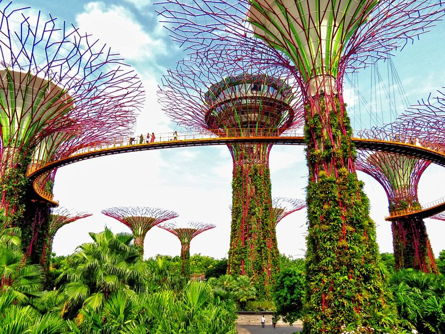
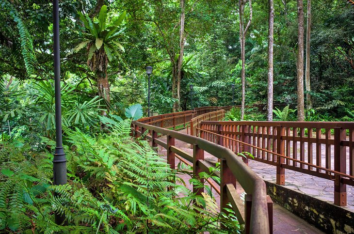

Singapore in Pictures
1. Marina Bay Sands

Marina Bay Sands, a waterfront resort, is one of the most recognizable
and photographed buildings in Singapore.
The massive complex includes a hotel, museum, a 74,000-square-meter
shopping center, theaters and galleries, and
a Skypark with an infinity pool and a rooftop garden overlooking the
bay.
2. Gardens by the Bay

Gardens by the Bay is a nature park spanning 101 hectares in central
Singapore.
The park consists of three waterfront gardens: Bay South Garden, Bay
East Garden and Bay Central Garden.
The largest of the gardens is Bay South Garden at 54 hectares.
3. Bukit Timah Nature Reserve

Just 12 kilometers from the heart of Singapore and sitting on the slopes
of Bukit Timah Hill,
this tiny 1.64-square-kilometer park is covered in rainforest and home
to over 500 animal species
– including the reticulated python,
crab-eating macaques, and the rare red-crowned barbet bird.
Tropical ferns and dense jungle surround the many hiking trails here,
and the reserve also offers rock
climbing and abseiling (rappelling) opportunities, as well as mountain
bike trails.